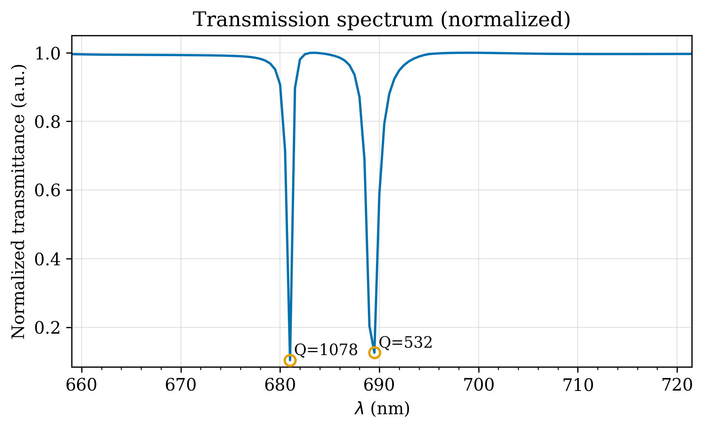
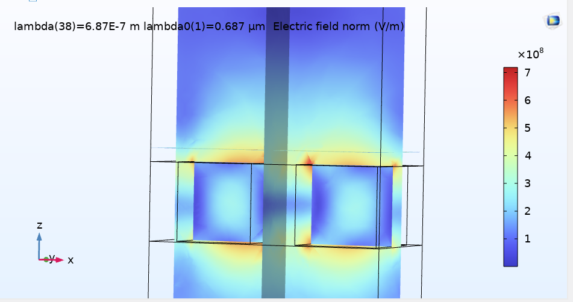
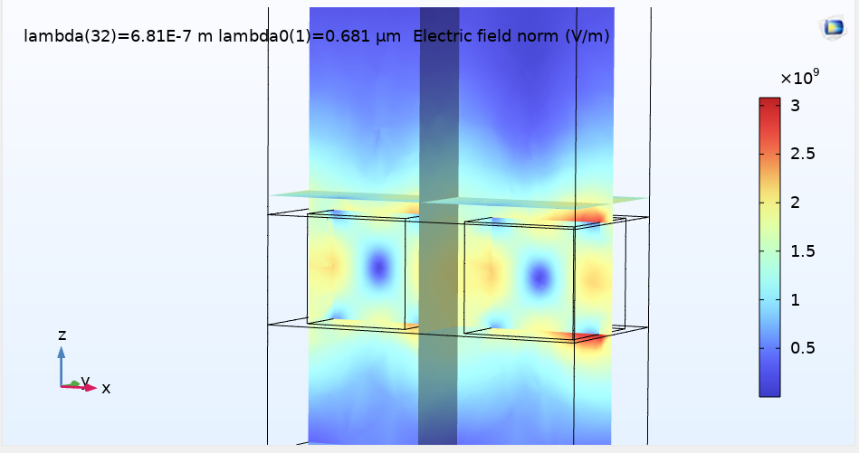
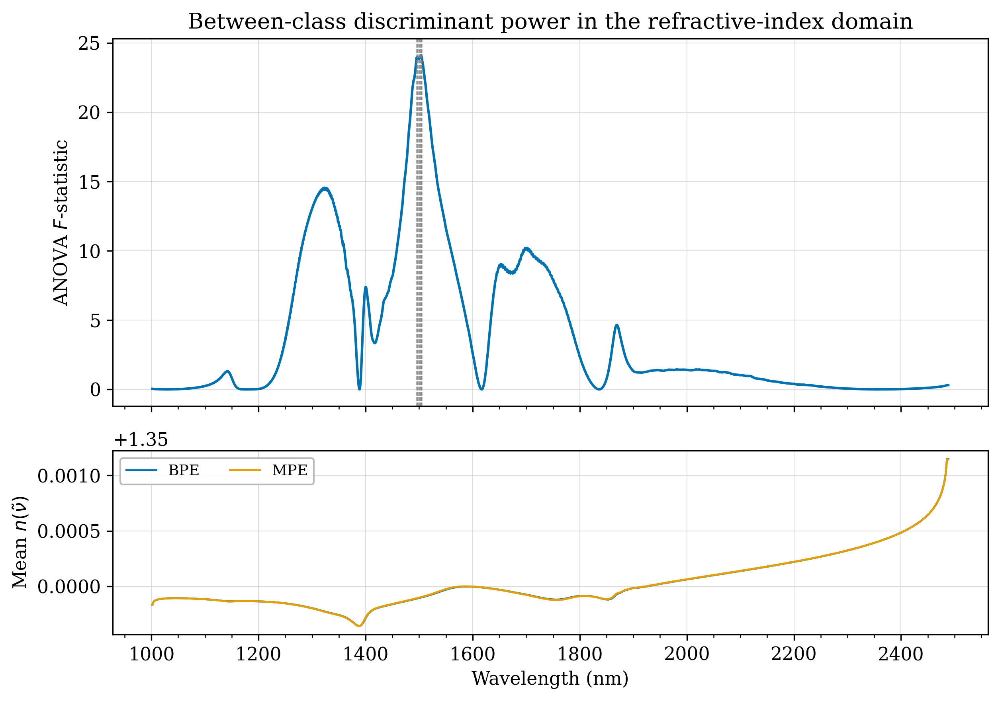
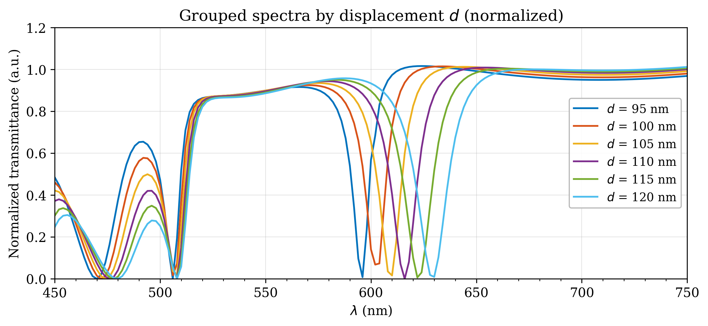
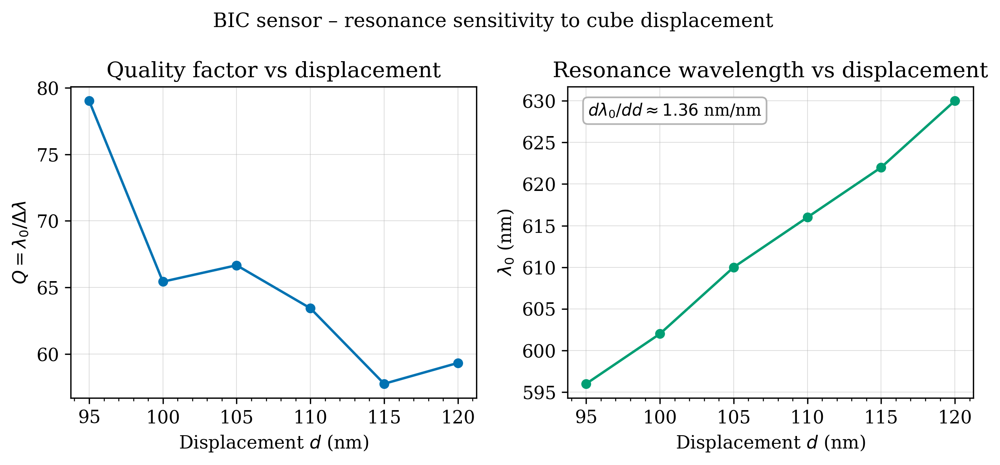
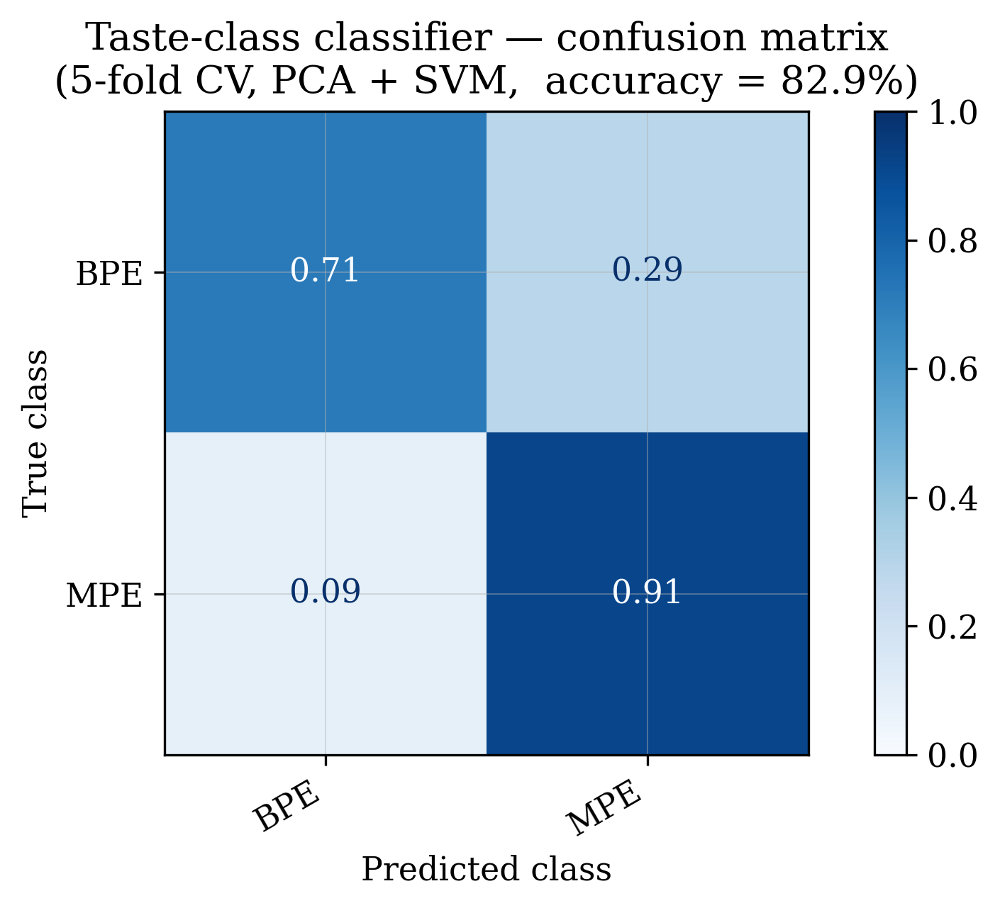

Open source · Python + COMSOL
github.com/muhammadzareii/bic-cell-classifierOverview
Bound states in the continuum (BIC) are resonant states that exist within the radiation continuum but remain perfectly confined — zero radiative linewidth and theoretically infinite Q-factor — due to complete destructive interference between all radiation channels. Introducing a small symmetry break converts the ideal BIC into a quasi-BIC (qBIC) with a very high but finite Q-factor, creating a sharp, observable transmission dip.
This project exploits that sharp dip for label-free biological sensing. The target is discriminating benign prostate epithelium (BPE) from malignant prostate epithelium (MPE) — cancer versus non-cancer cells — based on the refractive index (RI) difference they induce in the surrounding medium. No fluorescent labels, no surface functionalization, no sample destruction. The sensor reads RI directly from resonance shifts.

Fig. 1. COMSOL-simulated BIC transmission spectrum. Two quasi-BIC resonance dips appear at distinct wavelengths within the 655–725 nm working range. Q > 1000 at the sharper dip. Both dips have TSB > 0; they respond with different sensitivity to RI and temperature changes, enabling temperature-compensated sensing.Why Two Resonance Dips?
A temperature change shifts the refractive index of any liquid medium independently of the analyte — creating an ambiguity: is the resonance shift from the cells, or from a temperature drift? A single dip cannot separate these two effects. Two dips at different wavelengths have different sensitivities to RI and to temperature. Their shift ratio solves a 2×2 system that decouples the two contributions, giving a temperature-compensated RI measurement without any external thermometer.
Symmetry-Breaking Mechanism
An ideal periodic array of Si nanocubes supports a perfect BIC: no radiation, no observable dip. The translational symmetry break (TSB) is a controlled lateral offset δ between adjacent cube pairs. This breaks the in-plane symmetry, coupling the dark mode to radiation, and the resonance becomes visible. The Q-factor scales as Q ∝ 1/δ², so the sensitivity–linewidth trade-off is tunable by design.

0) — qBIC mode not excited" /> Fig. 2. Si nanocube array (TSB > 0) illuminated at a non-resonant wavelength — between the two quasi-BIC dips. The qBIC mode is not excited; the field shows no anomalous confinement. Contrasting this panel with Fig. 3 isolates the resonance-driven field enhancement from the underlying array geometry.
0) showing strong qBIC field confinement" /> Fig. 3. Same nanocube geometry (TSB > 0) illuminated at a resonance wavelength. The quasi-BIC mode is excited; field energy concentrates strongly between and around the nanocubes. The only difference from Fig. 2 is the illumination wavelength, demonstrating that the strong field confinement is resonance-driven, not geometric.Sensor Design
| Parameter | Value |
|---|---|
| Structure | Si nanocubes on SiO₂ substrate |
| Nanocube width | 130 nm (at 20 °C) |
| Array periodicity | 400 × 200 nm |
| Substrate thickness | 150 nm |
| Simulation medium | Seawater-like reference (n = 1.35, salinity 0.35 %) |
| Working wavelength range | 655 – 725 nm |
| Best Q-factor achieved | > 1 000 |
| Symmetry-breaking mechanism | Translational symmetry break (TSB) — lateral offset δ between cube pairs |
| Biological target | RI difference between BPE (benign) and MPE (malignant) prostate epithelium |
Kramers–Kronig Spectral Conversion
Standard spectral databases, including the ATR-FTIR dataset used here, report absorbance A(ν̃). But the BIC resonance responds physically to the real part of the complex refractive index n(ν̃) of the surrounding medium. The Kramers–Kronig (K–K) relations convert between the two, following from causality of the optical response:
where k(ν̃) is the extinction coefficient derived from absorbance, and P.V. is the Cauchy principal value. The implementation uses Maclaurin's formula for the self-singular integral at ν̃ = ν̃′. This converts every absorbance spectrum in the dataset into a refractive-index spectrum — the feature space that physically corresponds to what the BIC sensor measures.

Fig. 4. ANOVA F-statistic across wavenumbers from the K–K-converted RI spectra. Peaks identify spectral regions where BPE and MPE are most separable in RI space — the physically informative features for the SVM classifier.COMSOL Parametric Sweeps
All COMSOL FDTD simulations characterise the sensor in the same seawater-like reference medium. What differs between simulation files is the sweep parameter — these are sensor characterisation studies, not different sample environments. The named sweep files are:
| Simulation file | Sweep parameter | Purpose |
|---|---|---|
bic_spectrum_single.csv | — | Reference transmission at fixed geometry |
bic_tsb_sweep.csv | TSB magnitude δ (nm) | Q-factor vs. symmetry break; maps Q ∝ 1/δ² |
seawater_refined.csv | TSB magnitude δ (nm) | Refined TSB sweep in the reference seawater medium |
bic_displacement_sweep.csv | Cube displacement d (nm) | Spectral shift as nanocube position varies |
bic_nenv_sweep.csv | Environmental RI nenv | Sensitivity: Δλ₀ / Δn — the core sensing figure of merit |

Fig. 5. BIC transmission spectra as nanocube displacement d varies. Both resonance wavelength λ₀ and Q-factor respond measurably — geometry changes translate into detectable spectral shifts, confirming the sensor’s operating principle.
Fig. 6. Q-factor and resonance wavelength λ₀ versus TSB displacement δ. The Q ∝ 1/δ² dependence predicted by coupled-mode theory is confirmed. A larger TSB broadens the dip (lower Q) but increases signal visibility.Classification: BPE vs. MPE
The dataset is 82 ATR-FTIR absorbance spectra from prostate tissue: 35 benign prostate epithelium (BPE) and 47 malignant prostate epithelium (MPE). After K–K conversion, PCA reduces the high-dimensional RI spectra to principal components capturing maximum variance. An SVM classifier with RBF kernel is trained on PC scores and validated by 5-fold stratified cross-validation.

Fig. 7. 5-fold cross-validation confusion matrix for PCA+SVM on K–K RI features. Rows: true class (BPE / MPE); columns: predicted class. Off-diagonal entries are misclassifications.Pipeline Architecture
Project Structure
bic-taste-sensor/ (original repo name, project was renamed) ├── data/ │ ├── MOESM2_ESM-C.xlsx # ATR-FTIR absorbance spectra (82 samples: BPE/MPE) │ ├── bic_spectrum_single.csv # COMSOL: reference transmission at fixed geometry │ ├── bic_tsb_sweep.csv # COMSOL: transmission vs. TSB magnitude delta │ ├── seawater_refined.csv # COMSOL: refined TSB sweep in seawater reference │ ├── bic_displacement_sweep.csv # COMSOL: transmission vs. cube displacement d │ └── bic_nenv_sweep.csv # COMSOL: sensitivity sweep - delta-lambda vs delta-n ├── src/ │ ├── config.py # Paths, sensor constants, plot style │ ├── kk.py # Kramers-Kronig converter (Maclaurin discretisation) │ └── sensor.py # COMSOL loader, dip detection, Q-factor extraction ├── results/figures/ # All publication-quality figures (300 DPI) └── generate_figures.py # Reproduce all figures from raw data